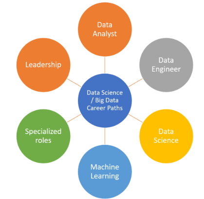
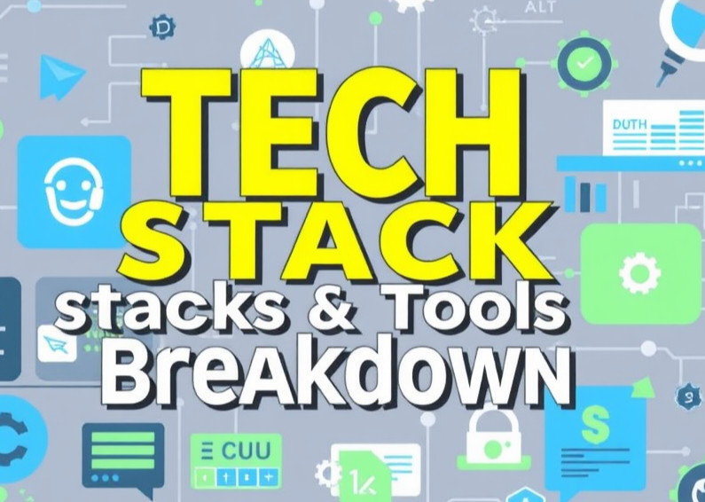
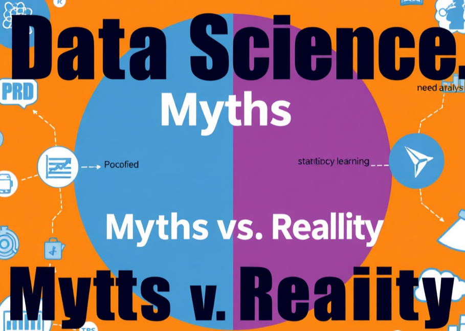

The Role of Data Science in AI Development
Published on June 27, 2024

Data science plays a pivotal role in the development of artificial intelligence. By leveraging large datasets, data scientists can train machine learning models to make predictions and automate decision-making processes. This post explores how data science techniques are essential for building robust AI systems and the future implications of these advancements.
Read MoreExploring the World of Data Science
Published on June 20, 2024
Data science is a field that combines statistics, mathematics, and programming. It is becoming essential in many industries. This post will explore the key concepts and tools that every aspiring data scientist should know.
Read MoreData Science Career Hacks
Published on June 15, 2024
Navigating a career in data science can be challenging. This post provides essential tips and hacks to advance your career, from networking strategies to skill development.
Read MoreHot Takes on AI & ML
Published on June 10, 2024
This post dives into the latest trends and hot takes in the fields of AI and machine learning, discussing both the excitement and skepticism surrounding these technologies.
Read MoreTech Stack & Tools Breakdown
Published on June 5, 2024
Understanding the right tools and technologies is crucial for data scientists. This post breaks down the must-have tech stack for data science professionals and how to choose the right tools.
Read MoreData Science Myths vs. Reality
Published on June 1, 2024
There are many misconceptions about data science. In this post, we debunk common myths and present the reality of what it takes to succeed in the field.
Read MoreConclusion
In conclusion, the field of data science is rapidly evolving, and it plays a crucial role in the advancement of AI technologies. Whether you're exploring new career paths or debunking myths, understanding the fundamentals of data science is essential for anyone interested in this exciting field. Stay tuned for more insights and discussions!